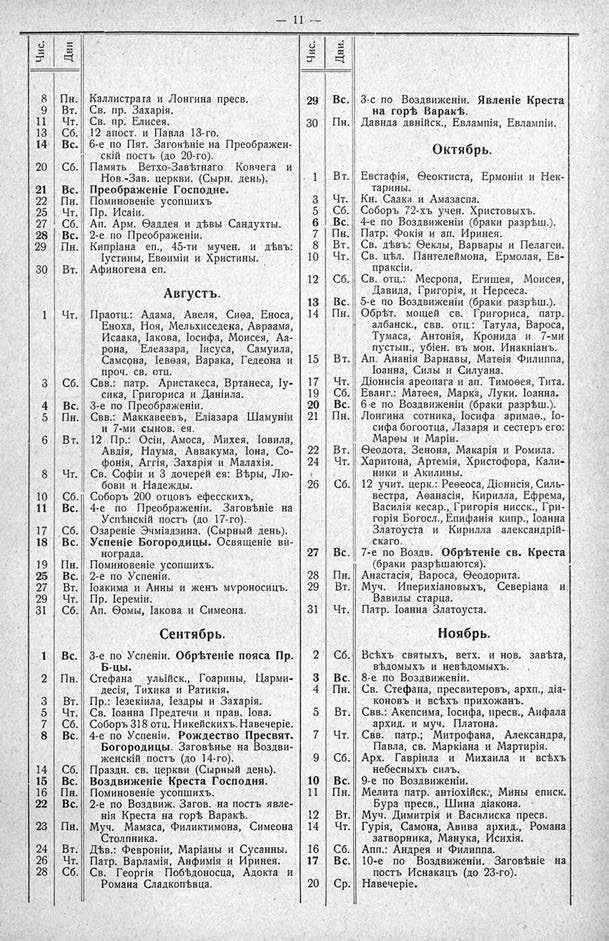

Лист источника 57
Скан

Распознанный текст
— 11 —
Чис. Дни.
8 Пн. Каллистрата и Лонгина пресв.
9 Вт. Св. пр. Захарія.
11 Чт. Св. пр. Елисея.
13 Сб. 12 апост. и Павла 13-го.
14 Вс. 6-е по Пят. Заговѣніе на Преображен-
скій постъ (до 20-го).
20 Сб. Память Ветхо-Завѣтнаго Ковчега и
Нов.-Зав. церкви. (Сырн. день).
21 Вс. Преображеніе Господне.
22 Пн. Поминовеніе усопшихъ
25 Чт. Пр. Исаіи.
27 Сб. Ап. Арм. Ѳаддея и дѣвы Сандухты.
28 Вс. 2-е по Преображеніи.
29 Пн. Кипріана еп., 45-ти мучен. и дѣвъ:
Іустины, Евѳиміи и Христины.
30 Вт. Афиногена еп.
Августъ.
1 Чт. Праотц.: Адама, Авеля, Сиѳа, Еноса,
Еноха, Ноя, Мельхиседека, Авраама,
Исаака, Іакова, Іосифа, Моисея, Аа-
рона, Елеазара, Іисуса, Самуила,
Самсона, Іеѳѳая, Варака, Гедеона и
проч. св. отц.
3 Сб. Свв.: патр. Аристакеса, Вртанеса, Іу-
сика, Григориса и Даніила.
4 Вс. 3-е по Преображеніи.
5 Пн. Свв.: Маккавеевъ, Еліазара Шамуніи
и 7-ми сынов. ея.
6 Вт. 12 Пр.: Осіи, Амоса, Михея, Іовила,
Авдія, Наума, Аввакума, Іона, Со-
фонія, Аггія, Захарія и Малахія.
8 Чт. Св. Софіи и 3 дочерей ея: Вѣры, Лю-
бови и Надежды.
10 Сб. Соборъ 200 отцовъ ефесскихъ,
11 Вс. 4-е по Преображеніи. Заговѣніе на
Успѣнскій постъ (до 17-го).
17 Сб. Озареніе Эчміадзина. (Сырный день).
18 Вс. Успеніе Богородицы. Освященіе ви-
нограда.
19 Пн. Поминовеніе усопшихъ.
25 Вс. 2-е по Успеніи.
27 Вт. Іоакима и Анны и женъ муроносицъ.
29 Чт. Пр. Іереміи.
31 Сб. Ап. Ѳомы, Іакова и Симеона.
Сентябрь.
1 Вс. 3-е по Успеніи. Обрѣтеніе пояса Пр.
Б-цы.
2 Пн. Стефана улыйск., Гоарины, Царми-
десія, Тихика и Ратикія.
3 Вт. Пр.: Іезекіила, Іездры и Захарія.
5 Чт. Св. Іоанна Предтечи и прав. Іова.
7 Сб. Соборъ 318 отц. Никейскихъ. Навечеріе.
8 Вс. 4-е по Успеніи. Рождество Пресвят.
Богородицы. Заговѣнье на Воздви-
женскій постъ (до 14-го).
14 Сб. Праздн. св. церкви (Сырный день).
15 Вс. Воздвиженіе Креста Господня.
16 Пн. Поминовеніе усопшихъ.
22 Вс. 2-е по Воздвиж. Загов. на постъ явле-
нія Креста на горѣ Варакѣ.
23 Пн. Муч. Мамаса, Фидиктимона, Симеона
Столпника.
24 Вт. Дѣв.: Февроніи, Маріаны и Сусанны.
26 Чт. Патр. Варламія, Анфимія и Иринея.
28 Сб. Св. Георгія Побѣдоносца, Адокта и
Романа Сладкопѣвца.
Чис. Дни.
29 Вс. 3-с по Воздвиженіи. Явленіе Креста
на горѣ Варакѣ.
30 Пн. Давида двнійск., Евлампія, Евлампіи.
Октябрь.
1 Вт. Евстафія, Ѳеоктиста, Ермоніи и Нек-
тарины.
3 Чт. Кн. Саака и Амазаспа.
5 Сб. Соборъ 72-хъ учен. Христовыхъ.
6 Вс. 4-е по Воздвиженіи (браки разрѣш.).
7 Пн. Патр. Фокія и ап. Иринея.
8 Вт. Св. дѣвъ: Ѳеклы, Варвары и Пелагеи.
10 Чт. Св. цѣл. Пантелеймона, Ермолая, Ев-
праксіи.
12 Сб. Св. отц.: Месропа, Егишея, Моисея,
Давида, Григорія, и Нерсеса.
13 Вс. 5-е по Воздвиженіи (браки разрѣш.).
14 Пн. Обрѣт. мощей св. Григориса, патр.
албанск., свв. отц.: Татула, Вароса,
Тумаса, Антонія, Кронида и 7-ми
пустын., убіен. въ мон. Инакніанъ.
15 Вт. Ап. Ананія Варнавы, Матѳія Филиппа,
Іоанна, Силы и Силуана.
17 Чт. Діонисія ареопага и ап. Тимоѳея, Тита.
19 Сб. Еванг.: Матѳея, Марка, Луки. Іоанна.
20 Вс. 6-е по Воздвиженіи (браки разрѣш.).
21 Пн. Лонгина сотника, Іосифа аримаѳ., Іо-
сифа богоотца, Лазаря и сестеръ его:
Марѳы и Маріи.
22 Вт. Ѳеодота, Зенона, Макарія и Ромила.
24 Чт. Харитона, Артемія, Христофора, Кали-
ники и Акилины.
26 Сб. 12 учит. церк.: Реѳеоса, Діонисія, Силь-
вестра, Аѳанасія, Кирилла, Ефрема,
Василія кесар., Григорія нисск., Гри-
горія Богосл., Епифанія кипр., Іоанна
Златоуста и Кирилла александрій-
скаго.
27 Вс. 7-е по Воздв. Обрѣтеніе св. Креста
(браки разрѣшаются).
28 Пн. Анастасія, Вароса, Ѳеодорита.
29 Вт. Муч. Иперихіановыхъ, Северіана и
Вавилы старца.
31 Чт. Патр. Іоанна Златоуста.
Ноябрь.
2 Сб. Всѣхъ святыхъ, ветх. и нов. завѣта,
вѣдомыхъ и невѣдомыхъ.
3 Вс. 8-е по Воздвиженіи.
4 Пн. Св. Стефана, пресвитеровъ, архп., діа-
коновъ и всѣхъ прихожанъ.
5 Вт. Свв.: Акепсима, Іосифа, пресв., Аифала
архид. и муч. Платона.
7 Чт. Свв. патр.; Митрофана, Александра,
Павла, св. Маркіана и Мартирія.
9 Сб. Арх. Гавріила и Михаила и всѣхъ
небесныхъ силъ.
10 Вс. 9-е по Воздвиженіи.
11 Пн. Мелита патр. антіохійск., Мины еписк.
Бура пресв., Шина діакона.
12 Вт. Муч. Димитрія и Василиска пресв.
14 Чт. Гурія, Самона, Авива архид., Романа
затворника, Манука, Исихія.
16 Сб. Апп.: Андрея и Филиппа.
17 Вс. 10-е по Воздвиженіи. Заговѣніе на
постъ Иснакацъ (до 23-го).
20 Ср. Навечеріе.